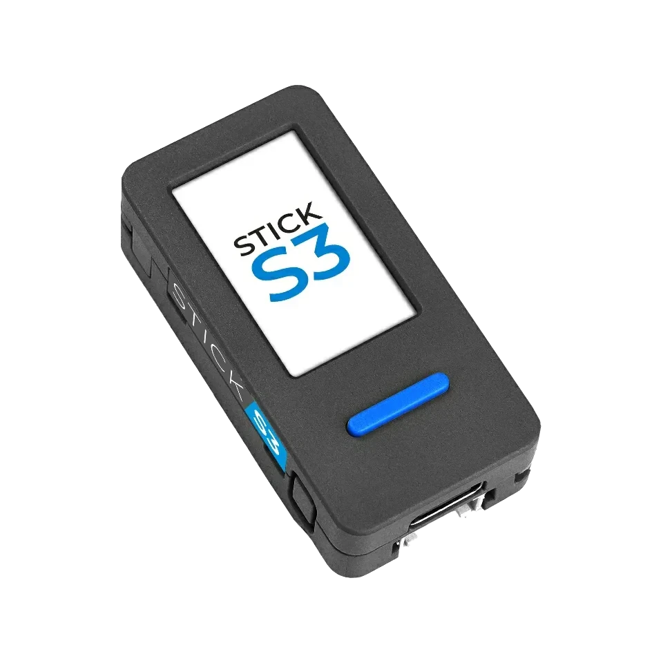

compact handheld checks
M5StickS3 for compact handheld ESP32 debugging
Use the M5StickS3 for compact ESP32-S3 workflows where a small screen, buttons, IR and battery are useful. It fits handheld UART checks, IR experiments and small ESP32-S3 debug tasks where size and battery matter more than a full bench connector layout.

Board-specific guide for M5StickS3 firmware, compact UART/GPIO checks, infrared use and ESP32-S3 debugging workflows.
compatibility
M5StickS3 board overview
Use this page to judge M5StickS3 for compact handheld checks, IR workflows and USB-connected ESP32 Bit Pirate sessions.
practical tasks
M5StickS3 supported workflows
M5StickS3 is useful for compact UART, I2C, GPIO and IR checks when a small handheld board is more important than many exposed pins.
Use it as a tiny USB-connected or handheld serial helper.
Run bus checks, pulse, listen and measure tasks on exposed pins with planned wiring.
Use built-in IR paths for remote-recipes when supported by the firmware mapping.
Flash, verify and use browser tools before moving to field use.
M5StickS3 pin mapping and wiring notes
The small enclosure and onboard peripherals make pin planning important. The wiki lists M5StickS3 header pins as GPIO1/GPIO2/GPIO3/GPIO4/GPIO5/GPIO6/GPIO7/GPIO8/GPIO10/GPIO43/GPIO44 and Grove as GPIO9/GPIO10, so do not reuse display, IR, audio or button resources casually.
Always verify voltage and pin mapping before connecting a target. The ESP32-S3 side is not 5 V tolerant unless external level shifting or the Dock path is used correctly.
useful pages
M5StickS3 useful next pages
Jump from M5StickS3 to compact-board recipes, Web Serial, flashing and hardware notes.
Protocol modes
Useful recipes
Use the task guide for wiring, commands and troubleshooting.
Measure GPIO frequencyUse the task guide for wiring, commands and troubleshooting.
Capture infrared remoteUse the task guide for wiring, commands and troubleshooting.
Check logic levels before wiringUse the task guide for wiring, commands and troubleshooting.
Tools and hardware
Open Web Serial for M5StickS3 CLI sessions after flashing.
Web FlasherFlash the matching M5StickS3 build from a compatible browser.
Hardware ecosystemCheck docks, adapters and wiring hardware that pair with M5StickS3.
Modules and target chipsBrowse chips and breakout modules that make sense with M5StickS3 wiring.
board-specific answers
M5StickS3 FAQ
Quick M5StickS3 answers about compact workflows, IR, GPIO limits and browser flashing.
Is M5StickS3 supported by ESP32 Bit Pirate?
Yes. The board has a dedicated supported firmware page and Web Flasher route.
Is it better than Cardputer?
It is smaller, but Cardputer is better when keyboard and SD-backed standalone workflows matter.
Can it do GPIO work?
Yes for compact tasks. Use DevKit if the job needs many simultaneous signals, labeled headers or repeatable bench wiring.
Does it support IR workflows?
The board includes IR hardware, so IR recipes are a natural fit when the firmware mapping supports the needed direction.
Who should choose M5StickS3?
Choose it when size and quick checks matter more than labeled headers or a fixed bench connector layout.

source project
M5StickS3 in the ESP32 Bit Pirate ecosystem
ESP32 Bit Pirate on M5StickS3 fits quick handheld checks, IR-oriented tasks, Web Serial sessions and compact GPIO work where size matters.